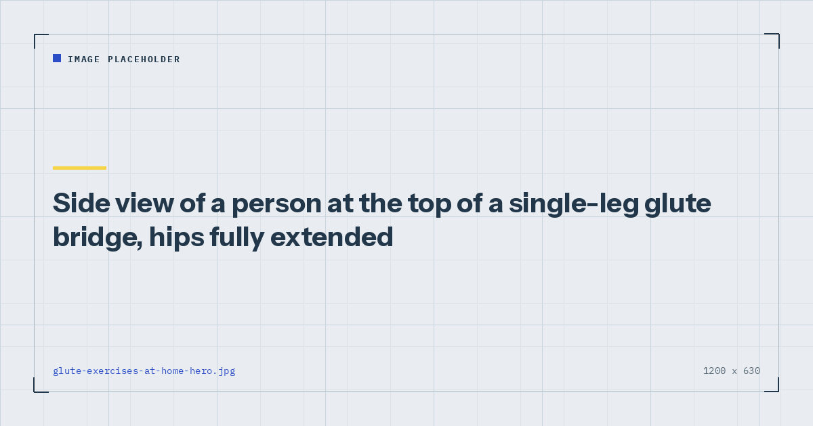

Bodyweight Strength
Glute Exercises at Home That Beat the Gym Machines
Glutes are one of the few muscle groups where home training is not obviously worse than a gym. The movements that load them hardest need almost nothing.

Most muscle groups are harder to train well without equipment. The glutes are the exception, and for a specific reason: the movements that load them best are hip extension patterns that respond very well to single-leg loading, long ranges and hard contractions rather than to heavy external weight.
You will not build the same maximum strength as someone doing heavy hip thrusts. But for size, function and the practical strength that matters outside a gym, home training does perfectly well here.
Why glutes respond well to home training
Three reasons.
Single-leg loading works unusually well. Moving from two legs to one roughly doubles the load, and glute exercises adapt to single-leg versions more naturally than most.
The peak contraction is at the top. Unlike a squat, where the hardest point is at the bottom, hip extension exercises are hardest at full extension — which is exactly where you can add a deliberate pause and squeeze. That pause is free intensity.
Most people start from a low base. Prolonged sitting means the glutes of the average desk worker are undertrained, so early progress is fast regardless of how much load is available.
What the glutes actually do
Three functions, and a complete programme covers all three:
- Hip extension — driving the thigh backward. The main function, trained by bridges, thrusts and hinges.
- Hip abduction — moving the leg away from the midline, and more importantly resisting the knee collapsing inward. Trained by side-lying work and lateral movements.
- Pelvic stability — keeping the pelvis level when standing on one leg. Trained by any single-leg exercise done well.
Most home routines cover the first and ignore the other two, which is why the knees-caving problem discussed in bodyweight squat form persists in people who do plenty of squats.
The six best home glute exercises
1. Single-leg glute bridge
On your back, one foot planted close to your glutes, other leg extended or knee held to chest. Drive through the heel until your body forms a straight line from knee to shoulder. One-second squeeze at the top, then lower under control. Three sets of ten to fifteen per side.
The pause is not optional. Without it most people bounce through fifteen repetitions and feel nothing.
2. Bulgarian split squat
Rear foot elevated, leaning the torso slightly forward to bias the glutes rather than the quadriceps. The most demanding exercise on this list — setup detail in Bulgarian split squats at home.
3. Single-leg Romanian deadlift
Standing on one leg, hinge at the hip and let the other leg extend behind you as a counterweight, keeping the back flat. Return by driving the hip forward. Balance is the initial limiter; hold a wall lightly if needed. Three sets of eight to twelve per side.
This is the pure hinge pattern and the one most home routines lack entirely.
4. Step-up
Onto a sturdy chair or the bottom of a staircase. Drive through the heel of the stepping foot without pushing off the trailing leg, and pause at the top. Height determines difficulty — higher is harder.
5. Side-lying hip abduction
Lying on your side, lift the top leg with the toe pointed slightly downward and the leg slightly behind your body line. Slow and controlled, twenty to thirty repetitions. Unglamorous, and the most direct way to train the abduction function.
6. Frog pump
On your back, soles of the feet together, knees out wide, and bridge upward. The wide knee position increases glute involvement relative to hamstrings. High repetitions — twenty to thirty — work well here.
The pause at the top of a bridge is worth more than five extra repetitions without one.
Why sitting makes this harder
Sitting for long periods keeps the hips flexed and the glutes inactive for hours at a time. The common claim that this causes the glutes to "switch off" is an overstatement, and I would rather not repeat it as fact.
What is reasonable to say is that a muscle group which spends most of the day unloaded, in a shortened position, tends to be underdeveloped and can feel harder to consciously contract. Many desk workers genuinely struggle to feel a glute bridge in their glutes at first, and instead feel it in the hamstrings or the lower back.
If that describes you, two things help. Start with two-legged bridges and focus on the squeeze rather than the height. And add some hip flexor mobility work, which is covered in the mobility routine for people who sit all day.
Programming glute work
Two or three sessions a week. Pick one hip extension exercise, one hinge and one abduction movement, three sets each.
Weekly volume drives adaptation up to a point,1 and around ten to twenty hard sets per week for the glutes is a reasonable target — noting that squats, lunges and split squats all contribute, so dedicated glute work does not need to supply all of it.
Rep ranges: eight to fifteen for the loaded single-leg movements, twenty to thirty for abduction and frog pumps. Since the load is light, proximity to failure is what produces the adaptation,2 so the last set of each should be genuinely hard.
What goes wrong
Arching the lower back instead of extending the hip. At the top of a bridge, the work should be felt in the glutes. If it is in the lower back, you have gone too high — stop where the squeeze is strongest.
No pause. The top of the range is where the glutes are most loaded. Bouncing through it removes the most productive part of the repetition.
Only doing bridges. One exercise trains one function. Without hinge and abduction work, two of the three roles go untrained.
Pushing off the back leg on step-ups. Quietly converts a single-leg exercise into a two-legged one.
Where to go next
For a complete lower-body session, see how to train legs at home without equipment. For where this sits in a week, use the three-day split.
Frequently asked questions
Can you build glutes at home without weights?
Yes, more successfully than most muscle groups. Glute exercises adapt well to single-leg loading, and their peak contraction occurs at full hip extension where a deliberate pause adds intensity for free.
What is the best bodyweight glute exercise?
The single-leg glute bridge with a one-second pause at the top, for pure hip extension. For a heavier stimulus, the Bulgarian split squat with a slight forward torso lean. A complete programme needs a hinge and an abduction movement too.
Why can I not feel my glutes working?
Common among people who sit for long periods, whose glutes tend to be undertrained and harder to consciously contract. Start with two-legged bridges focusing on the squeeze rather than the height, and add hip flexor mobility work.
How often should I train glutes?
Two or three sessions a week. Squats, lunges and split squats all contribute to weekly glute volume, so dedicated glute work does not need to supply the whole total on its own.
Do I need resistance bands for glute exercises?
No, though they make abduction work easier to load progressively. Single-leg bridges, split squats, single-leg Romanian deadlifts and step-ups all work with nothing at all.
Should I feel glute bridges in my hamstrings?
Some hamstring involvement is normal, but if it dominates, move your feet closer to your glutes and focus on squeezing at the top rather than lifting higher. Frog pumps, with the knees out wide, also bias the glutes more strongly.
Sources and further reading
- Schoenfeld BJ, Ogborn D, Krieger JW. “Dose-response relationship between weekly resistance training volume and increases in muscle mass: A systematic review and meta-analysis.” Journal of Sports Sciences, 2017;35(11):1073–1082. PubMed.
- Schoenfeld BJ, Grgic J, Ogborn D, Krieger JW. “Strength and Hypertrophy Adaptations Between Low- vs. High-Load Resistance Training: A Systematic Review and Meta-analysis.” Journal of Strength and Conditioning Research, 2017;31(12):3508–3523. PubMed.
- NHS. Strength and Flex exercise plan.
- MedlinePlus, U.S. National Library of Medicine. Exercise and Physical Fitness.
Comments
Comments are not enabled yet. Add a hosted comment embed (Disqus, Commento, Giscus) inside this container when you are ready.